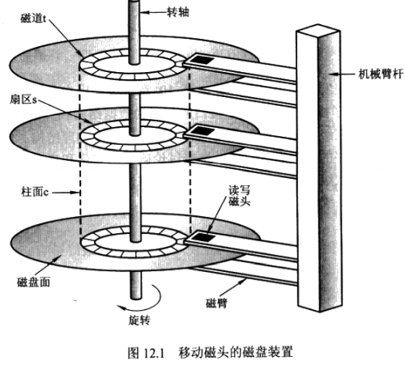
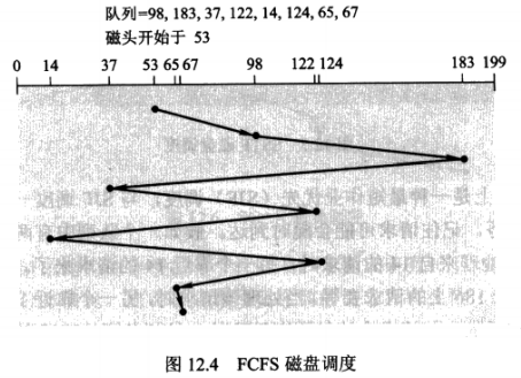
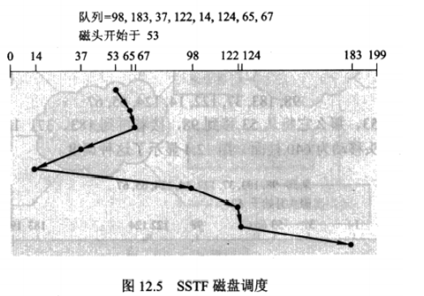
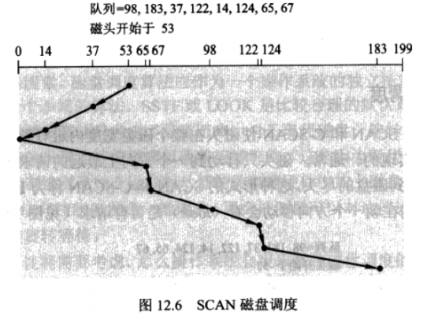
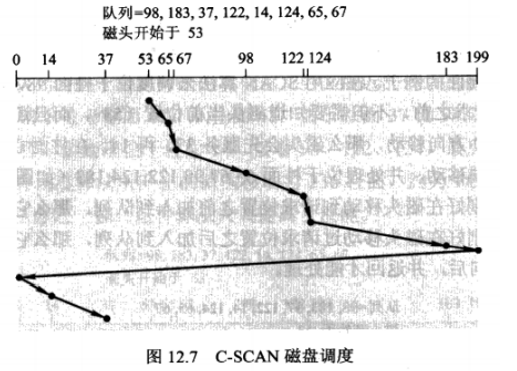
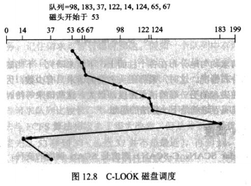

对于磁盘镜像，读请求处理的速度可以加倍，因为读请求可以发送给任一磁盘（只要两个磁盘都能工作)。每个读的传输率与单个磁盘系统一样，但是单位时间内读数量加倍了。
对于多个磁盘，通过在多个磁盘上分散数据，可以改善传输率。最简单形式是，数据分散是在多个磁盘上分散每个字节的各个位，这种分散称为位级分散。对于这种结构，每个磁盘都参与每次访问(读或写)，这样每秒所能处理的访问数与单个磁盘的一样，但每次访问可在同样时间内读相当于单个磁盘系统n倍的数据。
另外，分散不必在字节的位级上进行:例如，对于块级分散，一个文件的块可分散在多个磁盘上;其他分散级别，如扇区字节和块的扇区也是可能的。
总之，磁盘系统并行访问有两个主要目的: